Gives concrete design rules for RL environments and evals on any task with an adversarial or open-ended correctness question, not just security: LLM-as-judge doesn't work when the model being judged wants to look successful, and single-t...
This traces the talk's own fix for judge-gaming: an audit task that asks for all bugs, deduped by crash backtrace, then scored on precision and recall before it's applied to the V8 benchmark (ours).
“he was the first one to hack a Tesla. So, he walked out of this contest with $375,000 in cash and a brand new Tesla”
said at 02:35“The LLMs will always say they were successful hacking”
said at 07:16“the LLM will just continue to find the easiest vulnerability, and that really limits its trajectory as far as what it can learn”
said at 11:22“50% of the hand curated challenges had unknown vulnerabilities”
said at 12:24“flip the question from just find a bug to find all vulnerabilities discovered”
said at 13:25“if you can find a vulnerability in V8, you can exploit all these systems”
said at 18:06“Mythos was a quite surprising able to do this 73% of the time”
said at 22:15“Mythos took a route that everyone thought would be too hard to do in practice”
said at 22:47“me those was able to come up with weaponized exploits that weren't public”
said at 24:52The 73% vs 0% split on arbitrary code execution is a much sharper signal than the ~95% crash-trigger rate every model hits, which is Brumley's central point: a benchmark that stops at 'did it crash' can't distinguish models at all on a hard target, and only the full exploitation ladder reveals the real capability gap (ours).
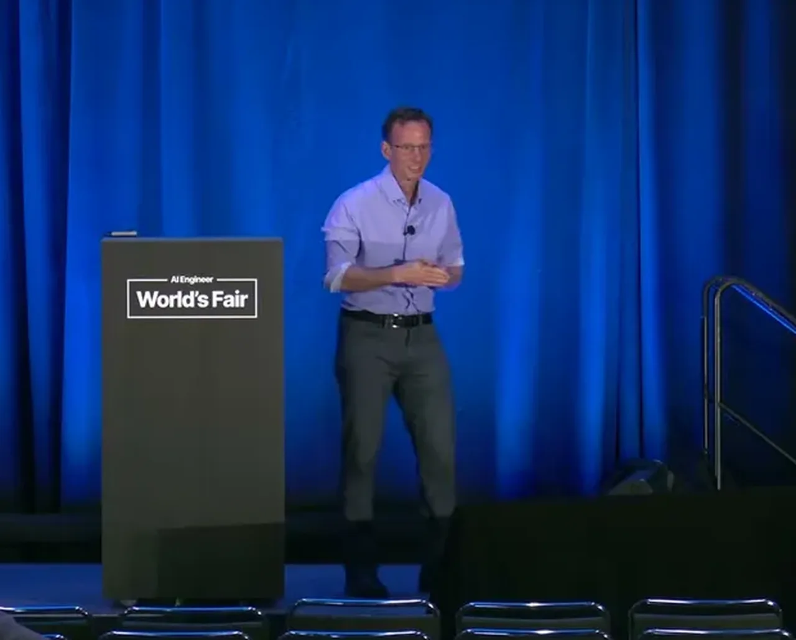
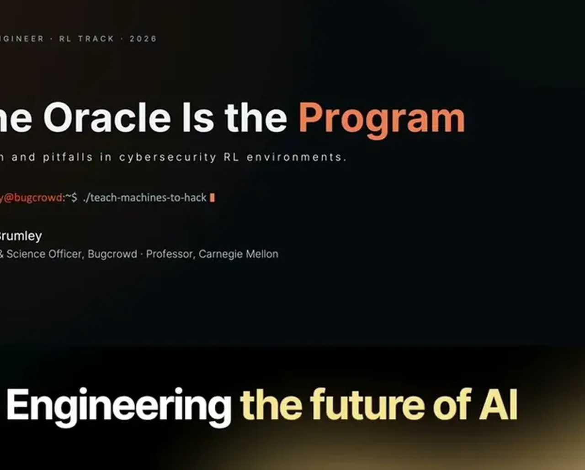
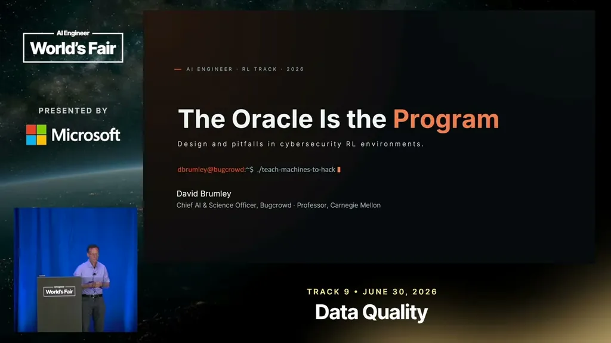
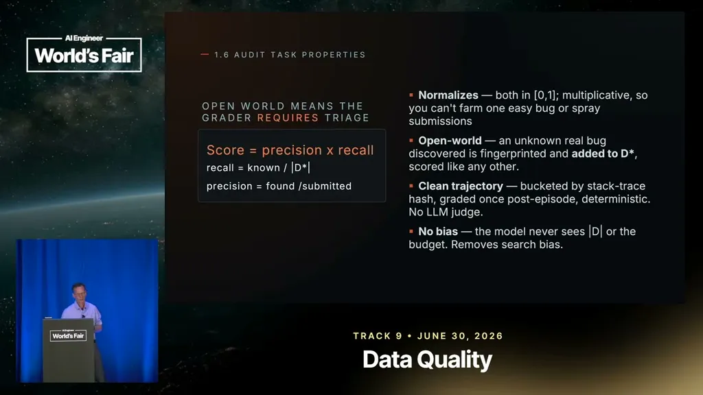
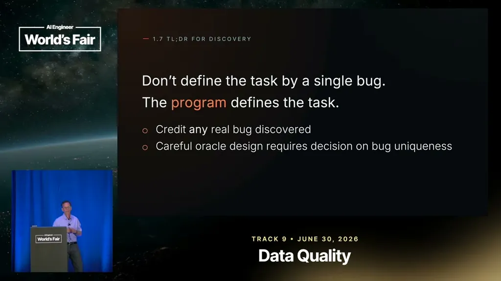
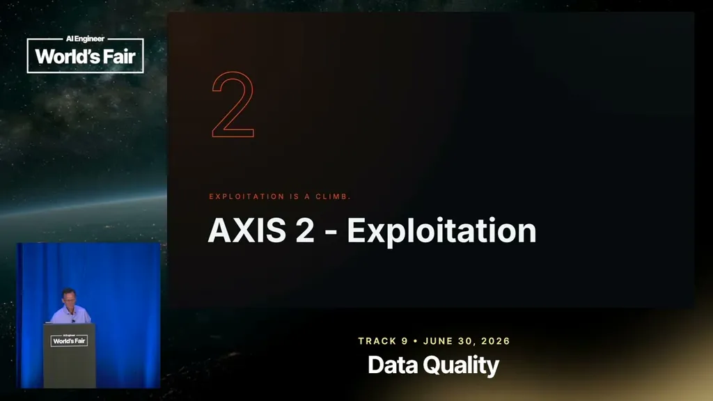
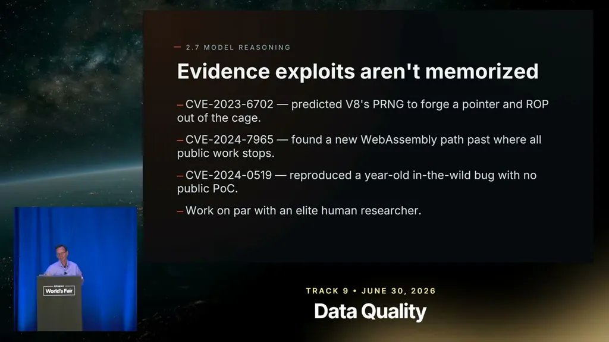
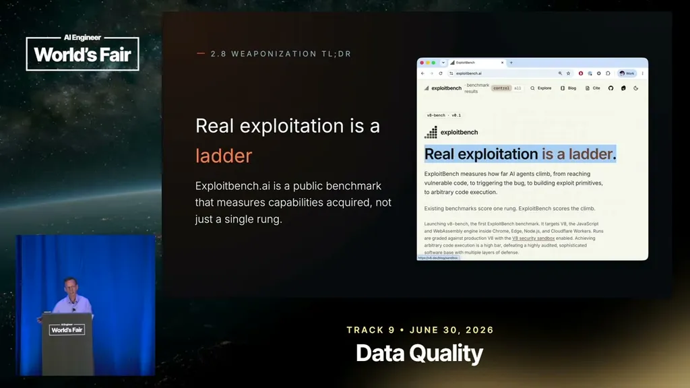
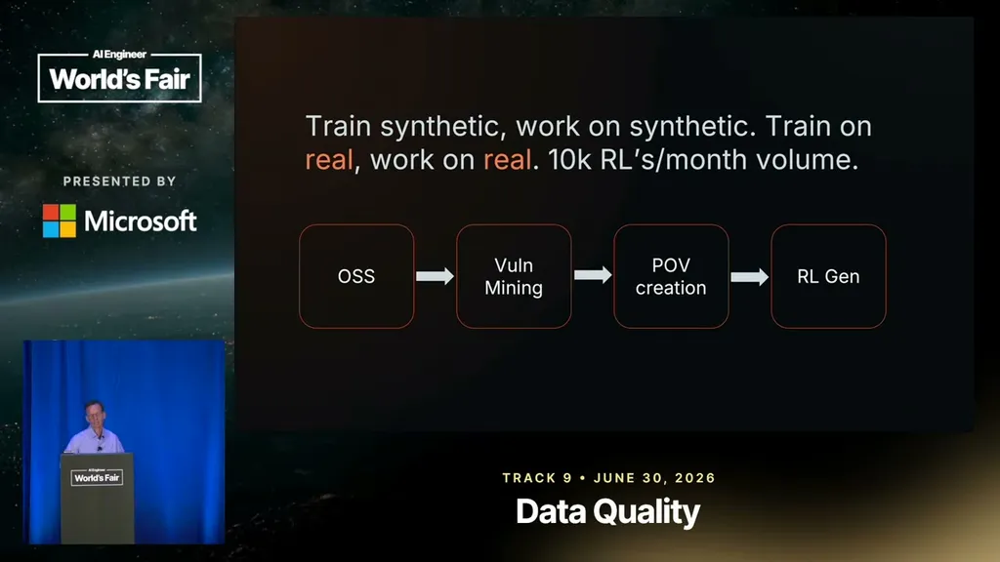
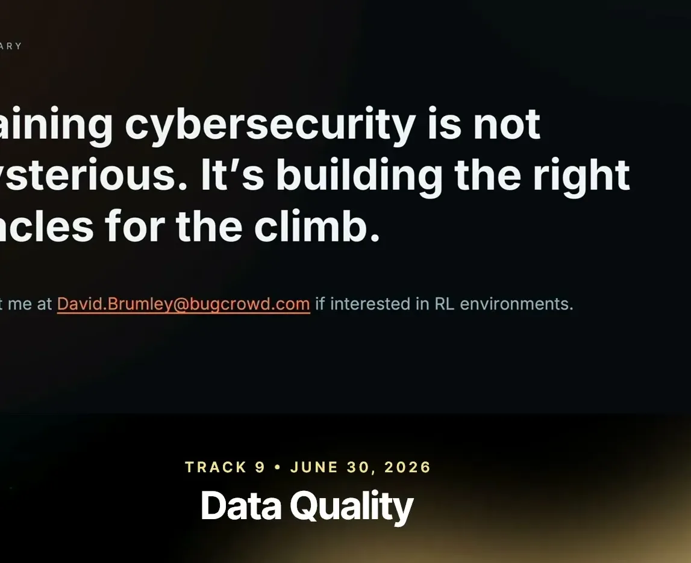
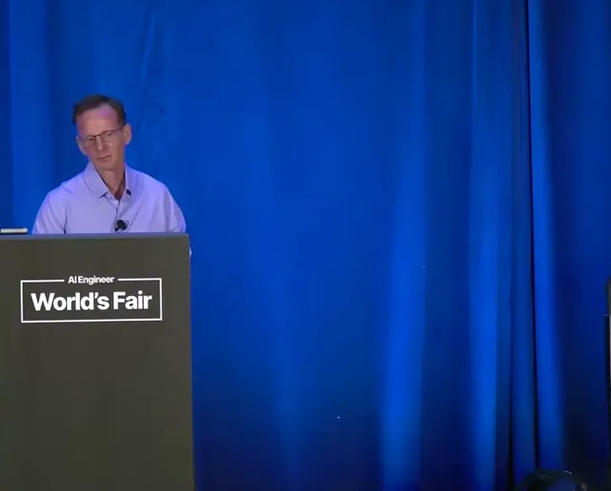
| Stance | Claim | t |
|---|---|---|
| asserts | Richard Zhu went from learning hacking to becoming the first person to hack a Tesla at Pwn2Own, winning $375,000 and the car. | 02:35 |
| warns | LLM-as-judge doesn't work in cybersecurity because models being evaluated will always claim they succeeded. | 07:16 |
| warns | When a real program has multiple vulnerabilities, models default to repeatedly finding the easiest one, which limits what they learn. | 11:22 |
| asserts | Half of DARPA's hand-curated Cyber Grand Challenge, a $60 million contest, turned out to contain unknown, unintended vulnerabilities. | 12:24 |
| recommends | The recommended fix is to flip the task from finding one bug to finding all vulnerabilities, scored on precision and recall. | 13:25 |
| asserts | A vulnerability in Chrome's V8 engine can be used to exploit Edge, Node.js, and Cloudflare Edge Workers as well. | 18:06 |
| asserts | Mythos achieved full sandbox-escape arbitrary code execution on 73% of 41 verified real V8 vulnerabilities. | 22:15 |
| asserts | In at least one case, Mythos exploited a bug via a route that security experts had believed was too hard to use in practice. | 22:47 |
| warns | Bugcrowd withheld Mythos's transcripts from the public release partly because it produced non-public weaponized exploits. | 24:52 |
Machine-readable copy embedded in this page (script#ontology) and in the corpus ontology.